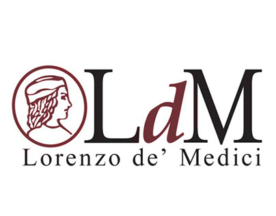
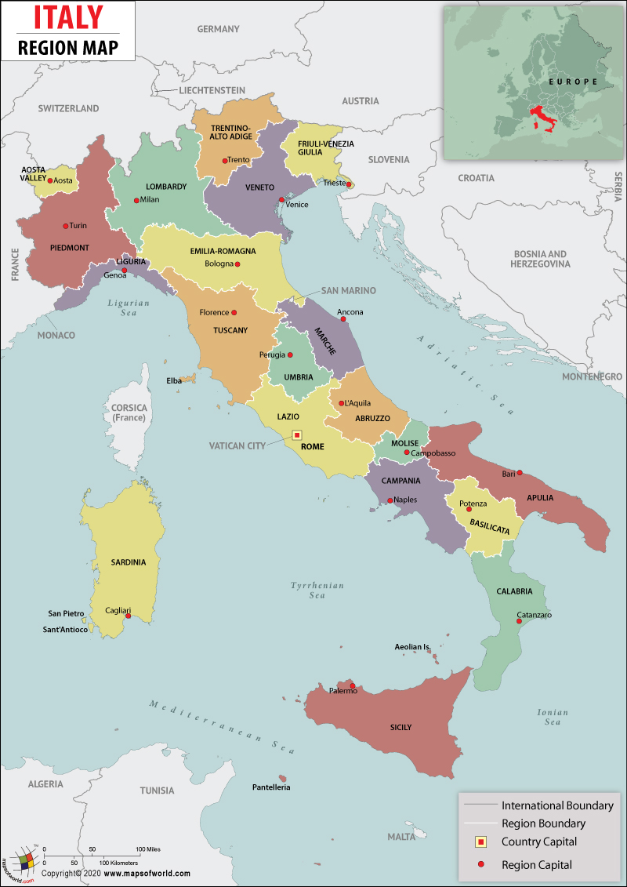

I studied abroad at the Lorenzo de Medici University, right in the heart of Florence. I took two courses: Italian Cooking and Nutrition, which were 2.5hrs everyday from Monday-Thursday. Weekends were free, which allowed me to travel and explore different parts of Italy.
I enjoyed the walk to class everyday where I would pass by the Duomo. I also climbed Brunelleschi's Dome, which was 463 steps to the top, with breathtaking views of the entire city. Piazza Michaelango was also a memorable spot to see the sunset on, although the walk was longer over the Ponte Vecchio. The Uffizi Gallery, Statue of David, and Palazzo Pitti were great art exhibitions and seeing some of the structures and paintings in person was amazing. The craftsmanship and detail to the Florentine leather goods, especially at the School of Leather, were incredible to see first hand. I bought many gifts for family and friends here, as they also customize the goods with stamping initials / messages. My favorite eats in the city had to have been a Florentine steak or pear pasta with a Hugo Spritz. I also loved getting gelato and affogatos everyday as a dessert or sweet treat to end my meals. It was a packed month of study abroad but I am glad to have spent a lot of my time in this historical and bustling city.
